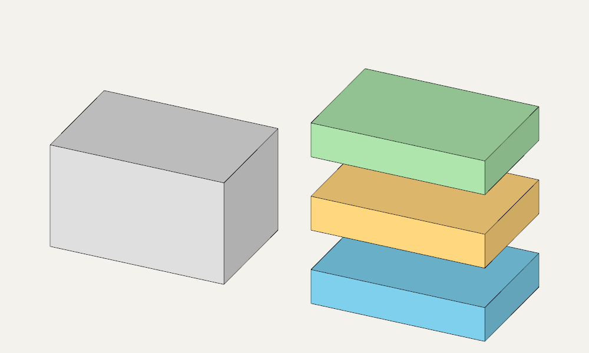
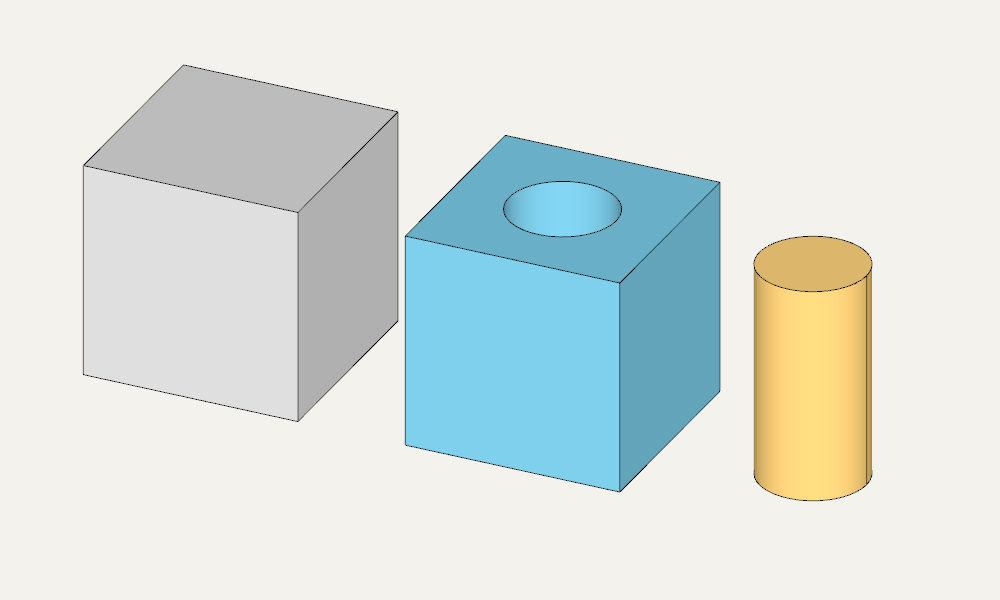
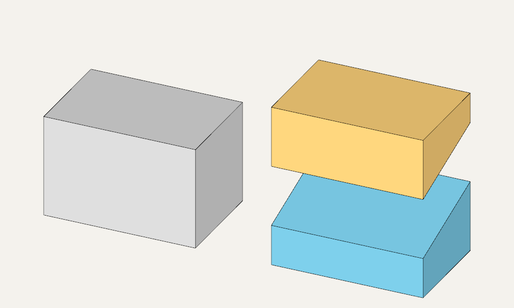

Splitting solids: split and slice
split and slice cut a solid into separate solid parts.
split — split a solid with specified geometry
split(body, tools) cuts body with one or more geometric tools. Each tool defines a cut boundary: it can be a planar face, such as infplane(), or another solid.
The result is a SplitResult, a collection of individual Solid objects. Iterate over the parts, access them by index and process them independently. Their number depends on the tool positions.
Two planes, three layers
Cut a box of height 18 with two horizontal planes at heights 6 and 12. This produces three layers, each 6 units thick. For the illustration, move the set to the right and add gaps between the layers.
from zencad import *
body = box(30, 20, 18)
planes = [infplane().up(6), infplane().up(12)]
parts = split(body, planes)
# Arrange the three layers from bottom to top.
layers = sorted(parts, key=lambda part: float(part.center().z))
assert len(layers) == 3
# Original solid on the left, separated layers on the right.
display(body, color=Color(0.7, 0.7, 0.7))
for index, part in enumerate(layers):
display(part.translate(45, 0, index * 7),
color=[Color(0.2, 0.6, 0.8), Color(1, 0.65, 0.2),
Color(0.4, 0.75, 0.4)][index])
show()

Splitting with a cylinder
Here the tool is a cylinder passing through a cube. The result has two parts: a cube with a cylindrical hole and a cylindrical core. Subtracting body - cutter would leave only the first part; split preserves both.
from zencad import *
body = box(24)
cutter = cylinder(r=6, h=32).translate(12, 12, -4)
parts = split(body, cutter)
# With these dimensions, the cylindrical part has the smaller volume.
core, remainder = sorted(parts, key=lambda part: float(part.mass()))
assert abs(float(core.mass() + remainder.mass() - body.mass())) < 1e-6
# Original solid, solid with a hole, and extracted core.
display(body, color=Color(0.7, 0.7, 0.7))
display(remainder.right(36), color=Color(0.2, 0.6, 0.8))
display(core.right(64), color=Color(1, 0.65, 0.2))
show()

An empty tool collection raises ValueError; the input shape must contain solids.
slice — split a solid with one plane
slice splits a solid with a single plane. For a horizontal cut, specify the height: parts = slice(body, z=8). Parts are ordered by the projection of their centers onto the plane normal.
The result, SliceResult, is a collection of solids. If the plane does not cut the solid or only touches it, the collection contains one solid. For example, len(slice(box(2), z=3)) == 1.
For two parts, write lower, upper = parts. The .lower and .upper properties are aliases for parts[0] and parts[1]; with one part, accessing .upper raises IndexError on evaluation.
An inclined cut
Specify an arbitrary plane as plane=(point, normal). In this example, it passes through (0, 0, 8) with normal (0, -0.3, 1): the cut height increases from 8 to 14 as Y goes from 0 to 20.
For an inclined plane, the normal determines the order: the first part lies on the negative side, the second on the positive side.
from zencad import *
body = box(30, 20, 20)
plane = ((0, 0, 8), (0, -0.3, 1)) # A point on the plane and its normal.
lower, upper = slice(body, plane=plane)
assert abs(float(lower.mass() + upper.mass() - body.mass())) < 1e-6
# Translations only separate the parts for display.
display(body, color=Color(0.7, 0.7, 0.7))
display(lower.right(45), color=Color(0.2, 0.6, 0.8))
display(upper.translate(45, 0, 12), color=Color(1, 0.65, 0.2))
show()
